Facilitates subframe evaluation, selection and weighting based on several subframe quality related measurements. [more]
Categories: ImageInspection, Preprocessing
Keywords: subframe evaluation, subframe selection, subframe weighting, star detection, star fitting, star profile full width at half maximum, FWHM, star profile eccentricity, subframe signal to noise ratio weight
[hide]
[hide]
The SubframeSelector script facilitates subframe evaluation, selection and weighting based on several subframe quality related measurements, including estimates of star profile full width at half maximum (FWHM), star profile eccentricity and subframe signal to noise ratio weight.
SubframeSelector provides the following functions:
SubframeSelector relies on a C++ reimplementation of the PJSR StarDetector Script for star detection, the PSF-related code from the PixInsight DynamicPSF process for star fitting, and PixInsight's multiresolution support noise estimation capabilites[1]. The script employs custom algorithms for data reduction and presentation. The subframe approval and weighting facilities rely on the PixInsight JavaScript Runtime.
The Subframe Selector is comprised of three windows that serve different functions.
The main window titled SubframeSelector is always available and has icons located top-right that open the other windows if they are not already open. This window is where you will "initialize" your settings (most of which will not change unless your imaging setup does), load the subframes to work on, and perform actions such as "Measure Subframes" or "Output Subframes".
The next window is titled SubframeSelector | Expressions and offers a large area to create and apply your Approval and Weighting expressions. More on that later!
The last window is titled SubframeSelector | Measurements and offers multiple ways of visualizing the information gathered about your subframes.
The Routine section offers the choice of procedure to run when Executed Globally. The default option is appropriate to start measuring.
In the Subframes section, add all target subframes. Subframes may be raw, calibrated or registered, but all should be the same type, have their overscan regions (if any) applied and cropped, be compatible for registration (if unregistered) and be compatible for integration. Measurements are typically most accurate on calibrated but unregistered subframes.
All subframes should be observations of the same target. Small variations in targeting are acceptable, such as those due to dithering and meridian flipping. Larger variations in targeting will result in incomparable property measurements.
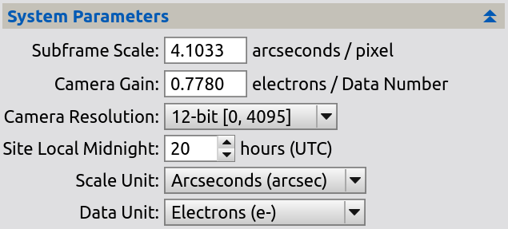Set the parameters in the System Parameters section.
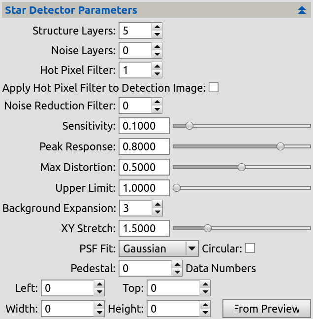Adjust the Star Detector section parameters if necessary so that between several hundred and several thousand stars are detected and fitted per subframe. The number of stars detected and fitted per subframe is provided by the Stars property once the measurement process has completed. A map of detected stars for the first subframe may also be generated by using the "Star Detection Preview" option in the Routine dropdown.
Select a Point spread function (PSF). The PSF functions are defined in the DynamicPSF process documentation. Star images will be fit to the selected PSF model. The quality of the fit on each subframe is provided by the StarResidual and StarResidualMeanDev properties once the measurement process has completed.
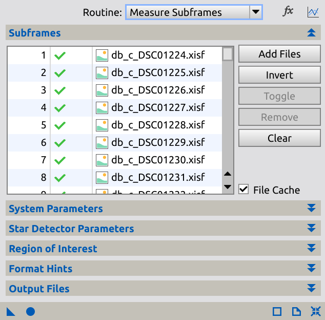With the default "Measure Subframes" option in the Routine dropdown selected, Execute the process Globally. Review the measurements presented in the table and the plots.
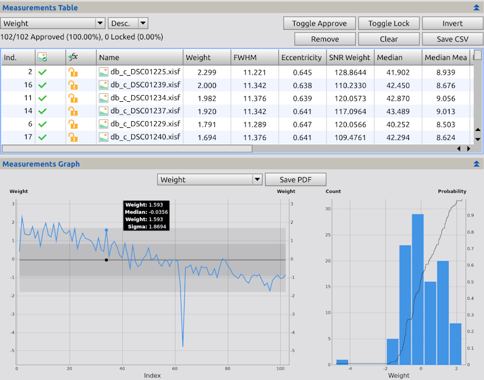The table contains one row per subframe with the subframe's Index, Approval Status, Locked Status, and Filename in the first few column and its subframe properties listed in the remaining columns. The table may be sorted by column by selecting a table sort column and a table sort ordering.
The table may be saved as a comma separated value .csv file for postprocessing by clicking the Save CSV button.
The most important properties measured by SubframeSelector are FWHM, Eccentricity, SNRWeight, Median, Median Mean Deviation and Noise. The remaining properties NoiseRatio, Stars, StarResidual, FWHMMeanDev, EccentricityMeanDev and StarResidualMeanDev provide supporting information of secondary importance.
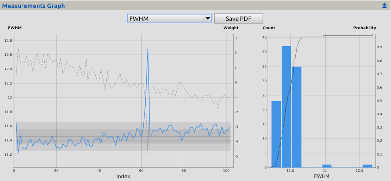Select a plot ordinate from the Ordinate list to view plots of the selected subframe property.
The first is a rather simple line plot and its abscissa represents subframes identified by their Index property whose value equals the index of the subframe in the Subframes list. The plot's left hand ordinate axis is labeled in units selected either in the System Parameters section or in the ordinate's natural units. The solid blue line represents the value of the selected ordinate. The plot's right hand ordinate axis and dashed line is the Weight of each subframe.
The central horizontal black line corresponds to the median of the property across all subframes. The two gradations surrounding the median line correspond to one and two mean absolute deviation units greater than and less than the median, respectively.
The vertical lines are visual aids to help associate subframes with their points. The points corresponding to adjacent subframes in index order.
The second plot contains a histogram and Empirical Distribution Function, which is a Cumulative Distribution Function applied to existing data. Whereas the first plot shows all subframes and their values, this plot shows all values and the amount of subframes in the bin's range. This plot's abscissa represents the total range in values for the property. The plot's left hand ordinate axis and solid blue bars represent the count of subframes within a certain value range. The plot's right hand ordinate axis and solid black line is the EDF. Essentially, for any x value, it will represent the count of subframes whose property is less than or equal to that value. In the example picture above, you can determine from this graph that nearly all subframes have a fairly standard distrubtion of FWHM values, but a couple are very large comparatively.
The selected plot may be saved as a PDF file for archival by clicking the PDF button.
The SubframeSelector script includes a subframe approval facility, with the option of copying/overwriting all approved/rejected subframes to output directories for postprocessing. Choosing a subset of subframes that meet certain quaility requirements for integration is an example usage of this facility.
A subframe may be approved or rejected by any of the following four ways:
An approved subframe is indicated by a check-mark in the table column for Approval Status and a dot shaped point in the plot. A rejected subframe is indicated by an cross-mark in the table column for Approval Status and a cross shaped point in the plot.
A subframe approved or rejected by one of the first three ways listed above will also be locked. The subframe approval expression will not modify the approved/rejected state of locked subframes. This locking mechanism provides a convienient way to override subframe approval expression dispositions. A locked subframe is indicated with a lock icon in the table column for Locked Status in the table and by a circle around its point in the plot. A locked subframe may be unlocked by any of these three ways:
Examples of subframe approval and rejection are shown below.
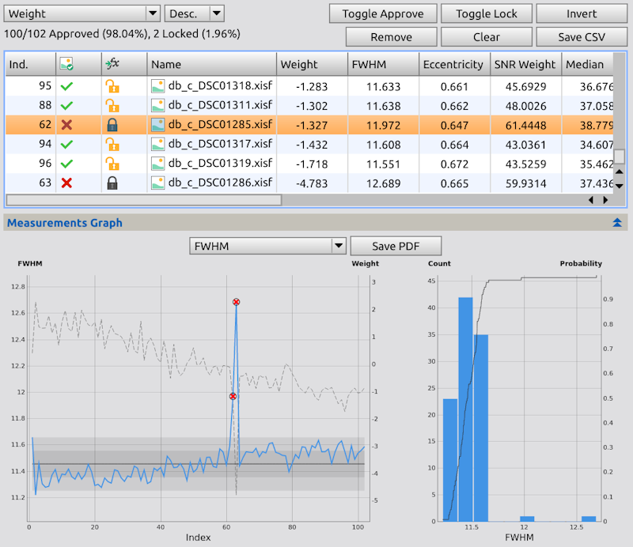In the plot above note that the FWHM of subframe 63 is the highest. The subframe can be rejected by clicking either its checkbox in the table or its point in the plot. The rejection is indicated by a cross-mark in the table and a cross shaped point. The subframe is also locked by this action. This lock is indicated by the lock icons.
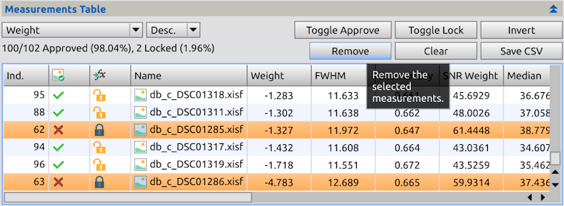On second thought, we definitely don't want to include these results as they are also influencing the mean deviation of an otherwise normal graph. These two subframes will be removed by selecting them and pressing the Remove button.
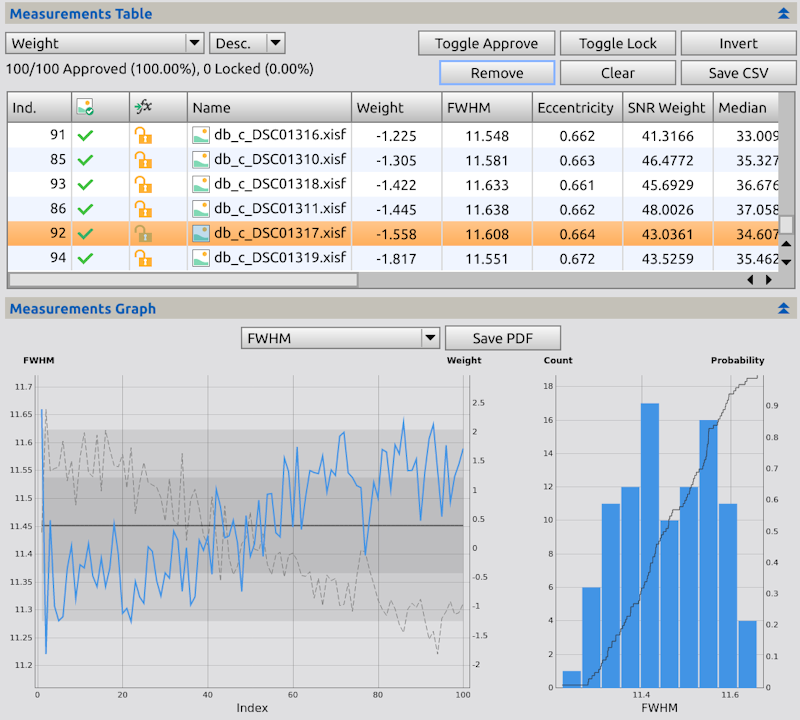In the plot above note that after the two strong outliers were removed, the graph is more stable and useful for inspection.
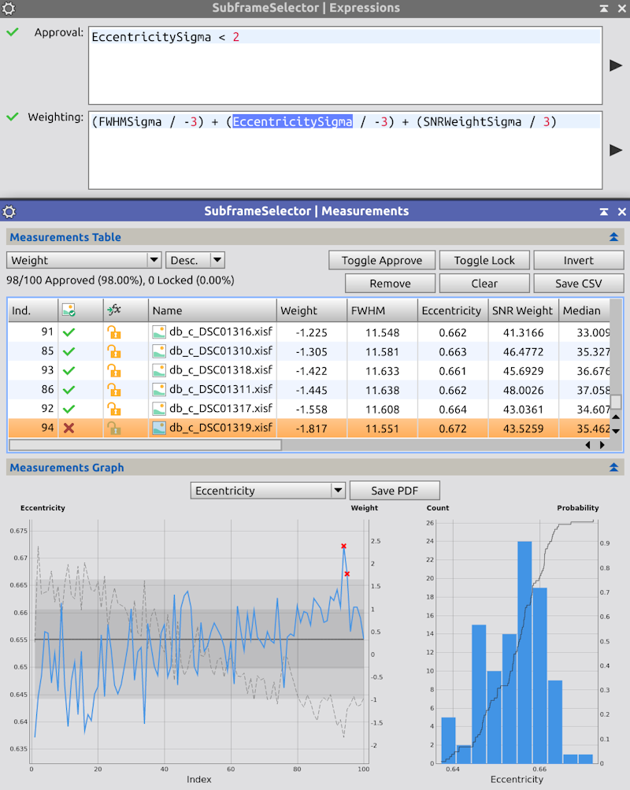In the plot above the expression EccentricitySigma < 2 was entered as a subframe approval expression. This expression states that an approved subframe's deviation of the Eccentricity from the median is lower than 3. All subframes not satisfying this requirement are rejected.
When entering expressions, you should use the icon to the right of the text entry in order to apply the expression to the subframes. Note that all subframes are unlocked since we removed the locked ones earlier, but different subframes are rejected by the approval expression.
Once subframe approval/rejection descisions have been completed, the approved/rejected subframes may be optionally copied/moved to output directories for postprocessing. See the section Output Subframes for details.
The SubframeSelector tool includes a subframe weighting facility which records subframe weights in FITS headers for postprocessing. Assigning integration weights to subframes is a very common example usage of this facility. Another example is the determination of the "best" subframe for use as a registration reference. Note that you do not have to remember these weights yourself. If you keep the SubframeSelector window open, or if you drag it into an icon in your workspace, you can reference them later. Even if the window and process were closed, the SubframeSelector caches the measurements, which means that running the process again on the same subframes and settings will be instantaneous! At this point, however, you'd have to remember or roughly recreate your Weighting eExpression. It's probably most helpful to determine a 'standard' Approval or Weighting Expression that you save into your workspace and project, such that each time you open the process it is there for your tweaking.
Subframe weights are assigned by specifying a subframe weighting expression. This expression is an arithmetic combination of a subframe properties whose value is interpreted as a subframe's weight.
Examples of subframe weighting are shown below.
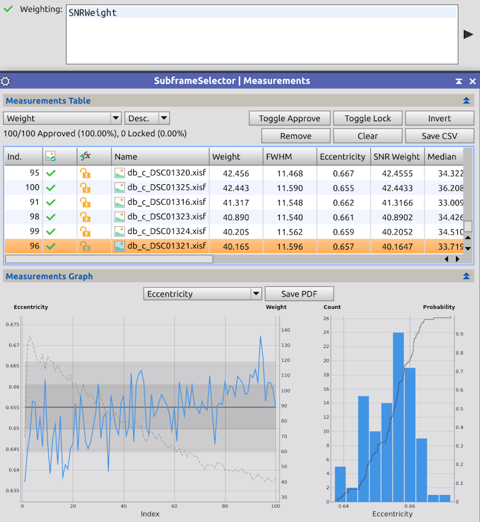The expression SNRWeight was entered as a subframe weighting expression as a very simple weighting function. Note that you can now see a secondary dashed line on the second y-axis that represents the subframe weight, and in the table the Weight column is equal to that of the SNRWeight. This is because `SNRWeight` is a property understood by the expression, and simply used as-is for the Weight.
SNRWeight is an unnormalized approximation of the current NoiseEvaluation weight used by the ImageIntegration process. See the definition of the SNRWeight property for more information.
SNRWeight weights are typically assigned to calibrated but unregistered subframes. These weights are carried through the StarAlignment registration process in the FITS headers and used by ImageIntegration for weighting purposes.
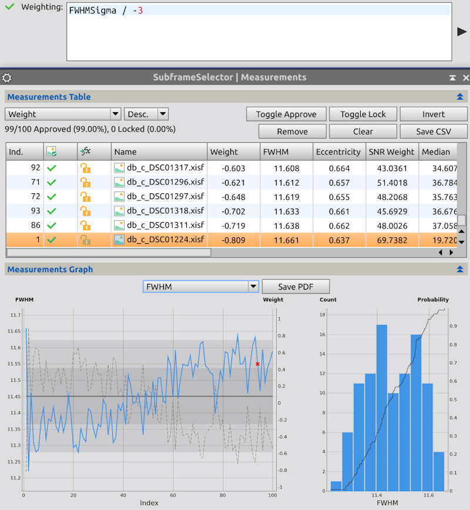The goal of this example is to develop a subframe weighting that combines aspects of both FWHM and SNRWeight. In other words we want to find subframes that have both low FWHM and high SNRWeight. The best of these subframes might be used as a registration reference for the StarAlignment process, for example.
The approach taken here to develop such a weight is to combine sigma normalized property values. Appending the suffix Sigma to a property name provides the property's value normalized in its sigma units. This value is scaled by the factor -3 in this example and used as the weighting expression. The absolute value 3 is choosen because all subframes are within 3 sigma values of the median. A negative value is choosen because larger FWHM values correspond to smaller weights.
As a result, subframes whose FWHM value equals the median are assigned weight 0, subframes with FWHM smaller than the median are assigned positive weights, and subframes with FWHM larger than the median are assigned negative weights. Furthermore, a subframe with a FWHM three sigmas larger than the median (the rejection threshold) is assigned weight -1. Note that although the Weight and FWHM values are on the same graph, the y-axis has different units.
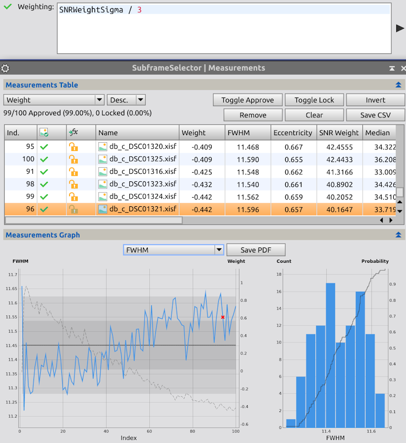Next a similar process is applied to SNRWeight. Here is it divided by 3 because the best SNRWeightSigma values are higher, not lower. The frames with a relatively lower SNRWeight have smaller weights.
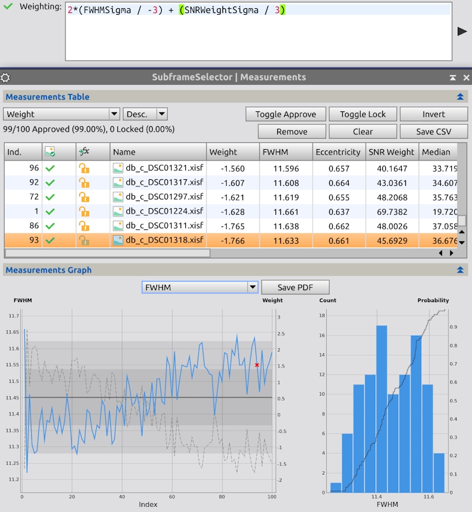Finally, the two scaled, sigma normalized property values are combined by summation. In a similar fashion, EccentricitySigma is also included. Each 'set' has been grouped by parenthesis only for clarity. Additionally, the FHWMSigma portion is doubled to relatively emphasize FWHM over the other parameters, which have less variance overall. An absolute value of 3 is added to the result because I prefer weights to start at 0, and this was enough to bump the negative weights past that point.
The results are shown against the FWHM by choosing the plot ordinate FWHM. Of course, different normalization factors may be choosen to modify the relative significance of FWHM and SNRWeight in the combination, and other parameters may be introduced to influence the weight.
Clearly a weighting scheme such as this is subjective in nature. The assigned weights depend on the underlying subframe property statistics as well as the choice of normalization factors. However, there may be no "proper" way to combine disparate measures like FWHM, SNRWeight and other subframe properties. Judgement is required given the intended use of the weights and the relative importance of subframe properties with respect to that use.
Once subframes have been approved or rejected, and optionally subframe weights applied, the approved subframes may be copied and/or overwritten to output directories by selecting "Output Subframes" option of the the Routine dropdown and Executing the process Globally. Output directories for approved subframes may be specified in the Output directory field. If a directory field is left blank, the associated subframes will be written to the same directories as their corresponding target files. The prefix and postfix fields specify prefixes and postfixes that will be prepended and appended to the file name of each copied or overwritten subframe. To record subframe weights in the FITS headers of the copies specify a FITS keyword in the Weight keyword field.
SubframeSelector provides values of the following properties for each measured subframe.
The index number of the subframe in the Target subframes list.
The approved/rejected status of the subframe shown as a checkmark or crossmark.
The locked/unlocked status of the subframe shown as a locked or unlocked lock.
The filename of the subframe in the Target subframes list.
The weight of the subframe as determined by the subframe weighting expression.
The weighted mean star profile full width at half maximum (FWHM) estimate for the subframe in arcseconds or pixels. The FWHM is a well-known and standardized measurement of the size of a star as seen on the subframe. It is the width normalized in arcseconds or pixels of a functional fit to a star image, measured horizontally at half its maximum value. For all stars fit in an image, their FWHM is weighted by the StarResidual value to minimize the influence of bad fits.
The weighted mean star profile eccentricity estimate for the subframe. Eccentricity is a measure of star profile distortion. Given an elliptical star profile with major axis diameter a and minor axis diameter b where a is greater than or equal to b, the star profile eccentricity equals (1 - b2 / a2)0.5, the star profile aspect ratio equals b / a and the star profile flatness equals a / b - 1. For all stars fit in an image, their Eccentricity is weighted by the StarResidual value to minimize the influence of bad fits. A distortion with an eccentricity less than about 0.42 is not perceptible to most people. The table below shows the relationship between these measures.
The signal to noise ratio weight estimate for the subframe. SNRWeight equals Median Mean Deviation2 / Noise2. SNRWeight is unnormalized approximation to the current NoiseEvaluation weight used by the ImageIntegration process when configured to use the average absolute deviation from the median as a scale estimator. In a subframe integration, the ratio between a subframe's SNRWeight and the reference subframe's SNRWeight approximately equals the NoiseEvaluation weight of the subframe.
The significance of the unnormalized SNRWeight and the normalized NoiseEvaluation weight is that a weighted subframe integration using these weights is an approximate maximum likelyhood estimator for pixel values that correspond to background limited targets, without requiring additional information such as exposure times or sensor parameters. See the ImageIntegration documentation for more information.
Note that SNRWeight and NoiseEvaluation weight are relative and not absolute measures of signal to noise ratio. Their formulation assumes that the subframes represent observations of the same target with the same filter and that the subframes have similar background gradients.
Frames with higher numbers are better, eg., less camera noise, less light pollution and sky background, more transparent skies and less atmospheric extinction, more exposure time, etc.
Note SNRWeight is not foolproof. You still should blink your frames. Strongly differing gradients, bright star halos from high thin clouds, etc, can result in bogus SNRWeight values.
The median of the subframe in electrons or Data Numbers.
The mean absolute deviation from the median of the subframe in electrons or Data Numbers.
An estimate of the standard deviation of Gaussian noise for the subframe in electrons or Data Numbers. Noise is currently determined by a wavelet-based multiscale algorithm[1].
The ratio of number of pixels in the subframe deemed free of image structure to the total number of pixels, so this value is always between [0,1]; used to estimate Noise.
The number of stars detected and fitted in the subframe and used to estimate FWHM, Eccentricity, FWHMMeanDev and EccentricityMeanDev.
Stars may sometimes be used as a measure of subframe quality, as worse observing conditions such as clouds, less exposure time, etc, will result in fewer detectable stars. Note however that for undersampled subframes, stars are tiny and the dimmest usually will be rejected as hot pixels. Better focus, better seeing, and better tracking will result in even smaller stars, higher hot pixel rejection, and smaller Stars values. So a smaller Stars may indicate a better subframe.
The mean absolute deviation from the median residual of the star fitting process for the subframe. Residuals are currently measured as the mean absolute deviation between the fitted PSF model and the star image data in normalized units.
The mean absolute deviation from the median star profile full width at half maximum (FWHM) estimate for the subframe in arcseconds or pixels.
The mean absolute deviation from the median star profile eccentricity estimate for the subframe.
The mean absolute deviation from the median residual of the star fitting process for the subframe.
SubframeSelector utilizes the PixInsight JavaScript Runtime for expression evaluation to aid in subframe approval and weighting. This facility is extremely similar to the Script version of the SubframeSelector and it provides a few enhancements. An expression's characters are white-listed to ensure this module runs correctly and predictably.
Basically all Subframe Properties are defined as variables to be used in the expression; their variables names are listed below. Expressions must evaluate to a single value, so the input JavaScript expression can simply be compared to a single-line mathematical equation, such as x = ... where x is either a boolean-like value (e.g. true, false, 0, 1) for approval or a numerical value for weighting.
variable = [ Index | Weight | WeightSigma | FWHM | FWHMSigma | Eccentricity | EccentricitySigma | SNRWeight | SNRWeightSigma | Median | MedianSigma | MedianMeanDev | MedianMeanDevSigma | Noise | NoiseSigma | NoiseRatio | NoiseRatioSigma | Stars | StarsSigma | StarResidual | StarResidualSigma | FWHMMeanDev | FWHMMeanDevSigma | EccentricityMeanDev | EccentricityMeanDevSigma | StarResidualMeanDev | StarResidualMeanDevSigma ]
Due to the restrictions on Subframe Expressions, there are only a few types of JavaScript expressions and operators that are worth knowing.
The Math Object in JavaScript is another helpful resource for expression creation. It provides many standard mathematical functions, such as Math.abs(x) for making an absolute number from an input x.
SubframeSelector performs a very simple check on the expressions to first determine if they are invalid. A checkmark to the left of each expression represents the validity of the current expression as you type. When the enter key is pressed or the field loses focus, all subframes are updated according to the expression. Since the initial check is not complex, it's possible for errors to occur at this time. If an error occurs, the subframes are not updated and the error is displayed in the console.
Subframe approval expressions specify constraints on subframe properties. Subframes with properties that satisfy a subframe approval expression are considered approved by that expression. Subframes that do not satisfy a subframe selector expression are considered rejected by that expression. All subframes satisfy a blank (empty) subframe approval expression.
Subframe approval expressions must evaluate to a boolean-like value. In JavaScript, this is not only a true/false value; for more information see Equality comparisons and sameness.
The value of a subframe's Weight property is specified by a subframe weighting expression. A blank (empty) subframe weighting expression assigns a zero weight.
Subframe weighting expressions must evaluate to a numeric value.
[hide]
Use these controls to define and manage a list of subframes to be processed by SubframeSelector.
This parameter specifies the working method to operate when Executing Globally. Options are Measure Subframes, Output Subframes, and Star Detector Preview.
Use these two icons to show the Expressions and Measurements windows if they have been closed.
This control is a list with all the subframes currently selected for measurement. On this list you can:
Add Files
Click this button to open a file dialog where you can select existing subframe files, which will be appended to the current list of target subframes.
Invert
Click to invert the selection of subframes in the list, such that selected items are deselected and vice versa.
Toggle
Click to toggle the checked/unchecked state of the current selection in the list of target subframes. Unchecked target subframes will be ignored during the measurement and output processes of SubframeSelector.
Remove
Click to remove current selection from the list of target subframes.
Clear
Click to clear the list of target subframes.
File Cache
This checkbox determines whether or not the SubframeSelector will use already-computed measurements from a cache instead of measuring the subframes again. Usually, this will always be on to speed up the measurement process if it was done once before.
This section provides access to parameters that specify subframe, camera, observation site, presentation units and pedestal information.
Subframe Scale
This parameter specifies target subframe scale in arcseconds per pixel. All target subframes must share the same subframe scale value.
SubframeSelector will represent FWHM and FWHMMeanDev properties in either arcseconds or pixels depending on the value of the Scale Unit parameter.
This parameter specifies camera gain in electrons per Data Number. All target subframes must share the same camera gain value.
By using the values of this parameter and Camera Resolution, SubframeSelector will represent all Median, Median Mean Deviation and Noise property values in either electrons or Data Numbers depending on the value of the Data Unit parameter.
This parameter specifies camera resolution in bits per pixel. All target subframes must share the same camera resolution value.
By using the values of this parameter and Camera Gain, SubframeSelector will represent all Median, Median Mean Deviation and Noise property values in either electrons or Data Numbers depending on the value of the Data Unit parameter.
This parameters specifies the Coordinated Universal Time (UTC) of local midnight at the site of target subframe observation, rounded to the nearest hour from 0 to 23. If this time is unknown or varies by more than six hours for the target subframes, set this parameter to 24.
SubframeSelector does not currently use this parameter.
This parameter specifies the camera pixel scale unit used for measurement presentation. Options are arcseconds and pixels.
This parameter specifies the camera pixel data unit used for measurement presentation. Options are electrons and Data Numbers.
This section provides access to parameters that control the star detection and fitting processes of SubframeSelector.
The star detection parameters should be tuned to detect between several hundred and several thousand stars per subframe. In most cases fewer than several hundred detected stars may risk compromising the accuracy of the measured statistics and more than several thousand detected stars wastes computation time and memory without any additional improvement in accuracy. The number of stars detected and fitted per subframe is provided by the Stars property once the measurement process has completed. A map of detected stars for the first subframe may also be generated by using the "Star Detection Preview" option in the Routine dropdown
Structure Layers
This parameter specifies the number of wavelet layers used for star detection.
Noise Layers
This parameter specifies the number of wavelet layers used for noise reduction. Noise reduction prevents detection of bright noise structures as false stars, including hot pixels and cosmic rays.
This parameter can also be used to control the sizes of the smallest detected stars (increase to exclude more stars).
Hot Pixel Filter
This parameter specifies the radius in pixels of median filter applied before star detection to remove hot pixels.
To disable hot pixel removal, set this parameter to zero.
Apply Hot Pixel Filter to Detection Image
Whether the hot pixel filter removal should be applied to the image used for star detection, or only to the working image used to build the structure map.
By setting this parameter to true, the detection algorithm is completely robust to hot pixels (of sizes not larger than Hot Pixel Filter), but it is also less sensitive, so less stars will in general be detected. With the default value of false, some hot pixels may be wrongly detected as stars but the number of true stars detected will generally be larger.
Noise Reduction Filter
Half size in pixels of a Gaussian convolution filter applied for noise reduction. Useful for star detection in low-SNR images.
Setting the value of this parameter > 0 implies Hot Pixel Filter To Detection Image.
Sensitivity
The sensitivity of the star detection algorithm is measured with respect to the local background of each detected star. Given a star with estimated brightness s and local background b, sensitivity is the minimum value of (s - b) / b necessary to trigger star detection.
Decrease this parameter to favor detection of fainter stars or stars on brighter backgrounds. Increase it to restrict detection to brighter stars or stars on dimmer backgrounds.
Peak Response
This parameter specifies star peak response. If you decrease this parameter, stars will need to have more prominent peaks to be detected by the star detection algorithm. By increasing this parameter, the star detection algorithm will be more permissive with relatively flat stars.
Max Distortion
This parameter specifies maximum star distortion. Star distortion is the fractional area of the star's bounding box covered by the star. The distortion of a perfectly circular star is about 0.75 (actually, π/4). Decrease this parameter to detect stars with larger elongation.
Upper Limit
Stars with peak values larger than this value won't be measured. This feature may be used to avoid the measurement of saturated and bloomed stars. To disable this feature, set this parameter to one. To disable star detection entirely, set this parameter to zero.
This parameter specifies the point spread function (PSF) used to fit star images. SubframeSelector can fit circular or elliptical Gaussian functions, Moffat [2] functions with a selected β parameter, and Lorentzian functions. These functions have been selected because their shapes make them particularly suitable to model stellar objects represented on most deep-sky images. The PSF functions are defined in the DynamicPSF process documentation.
Note that FWHM and eccentricity measurements for Gaussian, Moffat and Lorentzian functions are in general not compatible and should not be mutually compared. Also avoid comparing FWHM and eccentricity measurements with results obtained in other applications. Each application implements different methods in different ways and the results are in general not compatible.
Circular (point spread function)
Enable this option to fit circular point spread functions. Disable it to fit elliptical functions.
Circular functions can provide more robust and useful results in cases of strong undersampling or high noise levels.
Pedestal
This parameters specifies a (usually small) quantity that is subtracted from each target subframe prior to the measurement process. This value is represented in Data Numbers of the currently selected Camera Resolution parameter.
Subframe Region
This parameter defines a rectangular region of each target subframe that will be measured. The successive values specify the left, top, width and height of the region. To measure the entire area of each subframe set all four values to zero.
This parameter only applies to the Star Detection and Fitting stage of measurements; image-related measurements such as Median are calculated on the whole image. So, the Star Detection portion can be sped up significantly with a smaller region, but the Image Calculations will remain the same.
This is the directory where all approved subframes will be copied. Rejected subframes are ignored.
If this field is left blank, approved subframes will be copied to the same directories as their corresponding target files.
Prefix
This is a prefix that will be prepended to the file name of each copied approved subframe.
Postfix
This is a postfix that will be appended to the file name of each copied approved subframe.
This is the custom FITS keyword used to record subframe weights in copied subframes.
If this field is left blank, subframe weights will not be recorded.
Overwrite existing files
If this option is enabled the script will overwrite existing files with the same names as generated output files. This can be dangerous because the original contents of the overwritten files will be lost.
Warning: Use this option at your own risk.
On error
This parameter specifies what to do if there are errors during the output process of SubframeSelector.
Continue
The process will continue with the next target subframe, if there is one.
Abort
The process will be aborted immediately after an error condition.
Ask user
A dialog box will be shown where you'll have to specify whether to continue or to abort the process.
Approval
This parameter specifies the subframe approval expression, a constraint on subframe properties used to approve and reject subframes.
A cross icon to the left of the subframe approval expression indicates that the expression is invalid and that all unlocked subframes will be approved.
The icon on the right will apply the current subframe approval expression to the measured frames.
Weighting
This parameter specifies the subframe weighting expression, an arithmetic combination of subframe properties used to assign subframe weights.
A cross icon to the left of the subframe weighting expression indicates that the expression is invalid and that zero will be used as a substitute weight.
The icon on the right will apply the current subframe weighting expression to the measured frames.
This parameter specifies a table sort column.
This parameter specifies a table sort ordering.
The text here conveniently shows the total count of subframes, how many are currently Approved, and how many are currently Locked.
Toggle the approved/rejected state of the currently selected subframes. The toggled subframes will also be locked.
Rejected subframes will be ignored during the output subframes process of SubframeSelector. The subframe approval expression will not modify the approved/rejected state of locked subframes.
Toggle the locked/unlocked state of the currently selected subframes.
Inverts the selection of the table, such that selected subframes are deselected and vice versa.
Removes the selections in the table, such that selected subframes no longer measured and do not influence the median or mean deviation.
Clears the entire list of measurements.
Click this button to save the table as a comma separated value .csv file for postprocessing.
Subframes table
The table contains one row per subframe with the subframe's Index, Approval Status, Locked Status, and Filename in the first few column and its subframe properties listed in the remaining columns. The table may be sorted by column by selecting a table sort column and a table sort ordering.
On this table you can:
Left Plot
The plot displays values of the selected plot ordinate. On this plot you can:
Right Plot
The plot displays a histogram and Empirical Distribution Function for the selected plot ordinate. On this plot you can:
This parameter specifies the plot ordinate.
Click this button to save the current plot as a PDF.
[1] Jean-Luc Starck and Fionn Murtagh, Automatic Noise Estimation from the Multiresolution Support, Publications of the Royal Astronomical Society of the Pacific, vol. 110, February 1998, pp. 193-199
[2] Moffat, A. F. J., A Theoretical Investigation of Focal Stellar Images in the Photographic Emulsion and Application to Photographic Photometry, Astronomy and Astrophysics, Vol. 3, p. 455 (1969)
Copyright © 2017-2018 Cameron Leger. All Rights Reserved.